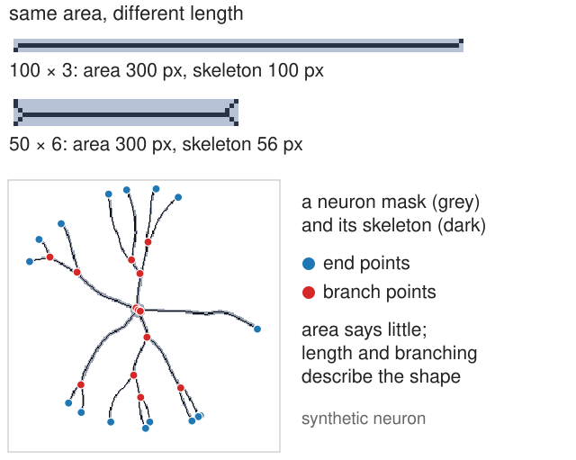
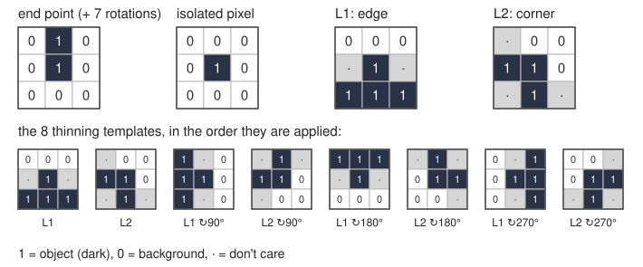
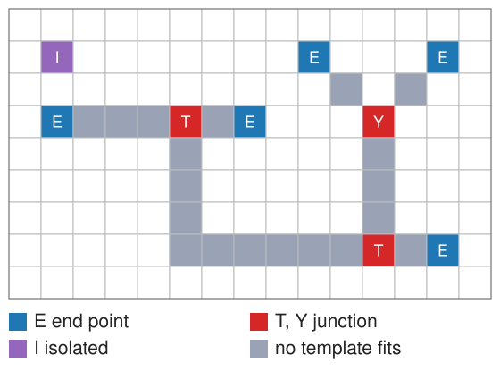
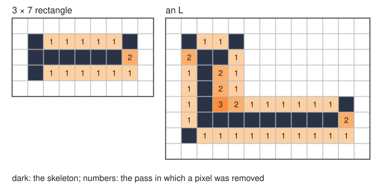
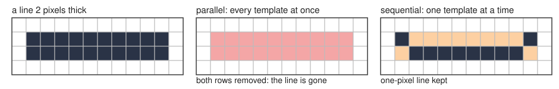
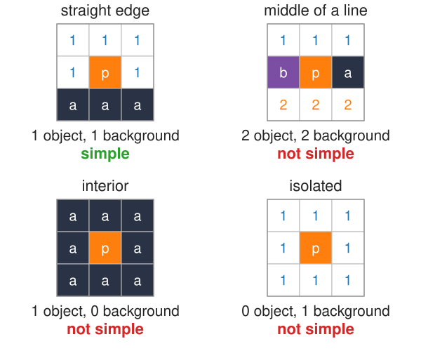
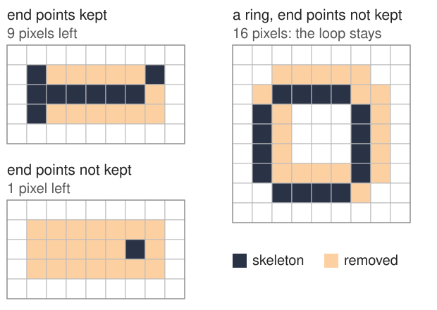
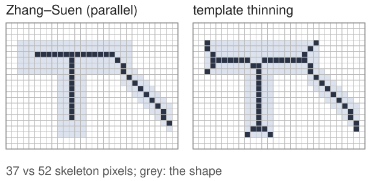

A thresholded neuron or blood vessel network is a mask. The questions biologists ask about it are how long and how branched, not how much area. For that we want a skeleton: a line one pixel wide, running along the middle of the shape, with the same connections and holes.
Hit-or-miss: a 3 × 3 template that must fit the object and the background at once. Finds end points, isolated pixels, junctions.
Thinning: peel the shape layer by layer with templates, one template at a time.
Simple points: which pixels can go without cutting the shape or opening a hole.
Why end points must be kept.
Slides titled The math give the formulas and proofs; the ideas are complete without them.
Why a skeleton?
A dendrite 1000 µm long and 2 µm wide, and one 500 µm long and 4 µm wide, have the same area. Area cannot tell them apart; length can.
A skeleton keeps what we want to count: length (pixels along the line), branch points, end points, loops.
Two requirements: thin (one pixel wide) and topology-preserving (the same number of pieces and holes as the shape).
Today: how to get it by local rules on a 3 × 3 neighbourhood. Next units: the skeleton as the middle of the shape (medial axis), then as a graph we can measure.

Recall: erosion asks “does it fit?”
From the morphology day: the erosion A \ominus B keeps the pixels where the structuring element B, placed there, fits inside the object A.
Erosion only looks at object pixels: “are these all 1?”
It cannot ask “are these 0?”. An end point of a line and a pixel in the middle of the line both fit a 1 × 1 element; to tell them apart we must also look at where the background is.
Hit-or-miss: fit the object and the background
A template on a 3 × 3 grid with three states:
1: this cell must be object,
0: this cell must be background,
· (“don’t care”): either.
The hit-or-miss transform marks every pixel where the template, centred there, fits completely: all its 1-cells on object, all its 0-cells on background.

The math: hit-or-miss
With B_1 = the 1-cells and B_2 = the 0-cells of the template (B_1 \cap B_2 = \emptyset):
A \circledast (B_1, B_2) = (A \ominus B_1) \cap (A^c \ominus B_2).
Two erosions: B_1 must fit in the object, B_2 must fit in the background A^c.
If B_1 \cap B_2 \ne \emptyset, a cell would have to be 1 and 0 at once: the result is empty.
Equivalently (A \ominus B_1) \setminus (A \oplus \check B_2): fits the object, and no background cell hits it.
Pixels outside the image count as background.
Templates for skeleton pixels
On a one-pixel-wide line, the 8 neighbours of a pixel say what it is:
Isolated pixel: centre 1, all 8 neighbours 0.
End point: exactly one neighbour. One template with a 1 above the centre, and its 8 rotations by 45°, find all of them.
Junction: three or more neighbours: T-shaped (left, right, below) and Y-shaped (two diagonals and one straight) templates, with their rotations.
Corner of a blob, edge pixel: templates with a row of 0s on one side and 1s on the other.
The union of the hit-or-miss transforms of all rotations finds every such pixel.

Try it: hit-or-miss
Thinning: peel with templates
Thinning removes, again and again, pixels where an edge or corner template fits, until nothing changes:
A \leftarrow A \setminus (A \circledast T)
Two templates (Golay’s L): L1 an edge pixel (background on one side, object on the other), L2 a corner pixel; each in 4 rotations: 8 templates.
Apply them one at a time: L1, L2, L1 turned 90°, … Each removes its matches before the next one looks.
No template matches a pixel with only one neighbour: end points survive, so lines keep their length.

One template at a time
Why not test all 8 templates on the same image and remove everything at once?

A line two pixels thick: the top row matches “background above”, the bottom row matches “background below”.
Removed in parallel, both rows go and the line is cut away. Each pixel was removable on its own, but not both together.
Sequentially, the top row goes first; then the bottom row has object above it and is kept.
Try it: thinning step by step
Simple points
A pixel is simple if removing it changes neither the number of objects nor the number of holes. Decide it from the 8 neighbours alone:
count the object parts among the 8 neighbours (8-connected),
count the background parts that touch the pixel’s 4 neighbours (4-connected).
Simple exactly when there is one of each.
Examples (right): a pixel on a straight edge: 1 object part, 1 background part: simple. The middle of a line one pixel thick: 2 object parts (left and right): removing it cuts the line. An interior pixel: no background part: removing it makes a hole. An isolated pixel: no object part: removing it deletes an object.

The math: simple points and the Euler number
Object: 8-connected; background: 4-connected (the pairing that avoids the paradoxes of digital topology, Kong & Rosenfeld 1989).
p is simple iff C_8(N_8(p) \cap A) = 1 and C_4^{p}(N_8(p) \cap A^c) = 1, the second counting only the background parts 4-adjacent to p.
A closed form: Yokoi’s connectivity number\displaystyle N_8(p) = \sum_{k \in \{0, 2, 4, 6\}} \big(\bar x_k - \bar x_k \bar x_{k+1} \bar x_{k+2}\big), \bar x = 1 - x, neighbours numbered around p starting with a 4-neighbour; a border pixel is simple iff N_8(p) = 1.
Removing a simple point keeps the Euler number\chi = (\text{objects}) - (\text{holes}), and more: it keeps every object and hole. Thinning that removes only simple points is topology-preserving.
End points: simple, but kept
An end point has one neighbour: one object part, one background part. It is simple: removing it changes no topology.
Remove simple points until none is left, and a line shortens from both ends; every tree-shaped object shrinks to a single pixel. Only loops survive, because their pixels have two object parts.
So thinning keeps end points on purpose. The L templates do this automatically: none of them fits a pixel with only one neighbour.
Thinning also depends on the order of removal: different (all valid) algorithms give slightly different skeletons.

Try it: simple or not?
Zhang–Suen: a fast parallel variant
The most widely used thinning (Zhang & Suen 1984) removes pixels in parallel, safely, by splitting each pass into two sub-passes:
remove a pixel if it has 2 to 6 object neighbours, exactly one 0 → 1 change around it, and (first sub-pass) its east or south side or north-west corner is background; (second sub-pass) the mirrored conditions.
Each sub-pass only removes from two sides, so a two-pixel line cannot vanish.
Typical artefacts of all thinning methods: lines two pixels thick on some diagonals, small loops or clusters at junctions, corners cut off, and short forks at the ends of wide shapes.

Same shape, two algorithms: Zhang–Suen cuts the ends short; templates leave forks.
Summary
Hit-or-miss: a three-state template (1, 0, don’t care) must fit object and background at once; it finds isolated pixels, end points (8 rotations), junctions, corners.
Thinning: remove the matches of edge and corner templates, one template at a time, until nothing changes. In parallel, a two-pixel line would be cut.
Simple point: one object part and one background part among the 8 neighbours. Removing simple points keeps the number of objects and holes (the topology).
End points are simple but kept; otherwise every line shrinks to a point.
The result: a one-pixel-wide, connected skeleton, with known artefacts at ends and junctions. Next: where exactly is “the middle” of a shape?